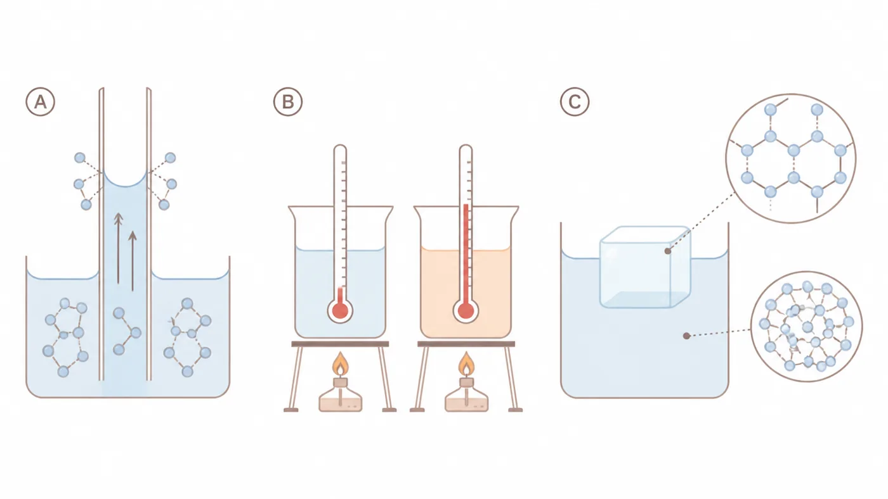

Polarność, wiązania wodorowe, rozpuszczanie, kapilarność, termika, zamarzanie zbiorników i udział wody w reakcjach metabolicznych.
Mapa pojęć: nie ucz się listy cech
Każda właściwość ma wynikać z budowy cząsteczki i prowadzić do skutku biologicznego.
Budowa
Polarne wiązania O–H i kątowa geometria tworzą trwały moment dipolowy.
Oddziaływania
Dipole tworzą wiązania wodorowe, które stale powstają i zanikają.
Skutki
Rozpuszczanie, kohezja, napięcie powierzchniowe, duże ciepło właściwe i anomalia gęstości.
Reguła odpowiedzi biologicznej: cecha budowy → oddziaływanie lub proces → właściwość → znaczenie dla organizmu.
1
Laboratorium dipola
Zmieniaj kąt H–O–H i polaryzację wiązań. Obserwuj, kiedy dipole wiązań się sumują, a kiedy znoszą.
model
Misja: ustaw cząsteczkę z polarnymi wiązaniami, ale zerowym momentem dipolowym.
2
Dynamiczna sieć wiązań wodorowych
Temperatura nie „usuwa” wiązań wodorowych jednym ruchem. Zmienia szybkość ruchu i trwałość sieci.
symulacja
Średnia liczba trwałych połączeń:
Dlaczego wzrost temperatury ułatwia parowanie?
3
Komora rozpuszczania
Najpierw przewiduj, potem uruchamiaj model. Rozpuszczalność wynika z konkurencji oddziaływań.
mikroskala
NaCl
Ujemny biegun wody kieruje się ku Na⁺, dodatni ku Cl⁻. Powstające otoczki hydratacyjne stabilizują rozdzielone jony.
Glukoza
Liczne grupy –OH tworzą wiązania wodorowe z wodą. Cząsteczka pozostaje cała, lecz zostaje otoczona przez rozpuszczalnik.
Tlen
O₂ jest niepolarny, więc jego oddziaływania z wodą są słabe. Rozpuszcza się tylko ograniczona ilość — ale biologicznie ma ona ogromne znaczenie.
Triacyloglicerol
Duże części niepolarne nie tworzą korzystnych oddziaływań z wodą. Cząsteczki łączą się w kroplę, zmniejszając powierzchnię kontaktu.
Co bezpośrednio wyjaśnia dobrą rozpuszczalność glukozy?
Dlaczego tłuszcz tworzy krople?
4
Kohezja, adhezja i kapilarność
Trzy terminy nie są synonimami. Zmieniaj średnicę kapilary i siłę zwilżania ścian.
model transportu

Rycina odniesienia (A). Podciąganie kapilarne wraz z siecią wiązań wodorowych i meniskiem wklęsłym. Panel B dotyczy ciepła właściwego (sekcja 5), panel C — anomalii gęstości lodu (sekcja 6).
Przewidywana wysokość podciągania:
Kohezja utrzymuje ciągłość słupa wody; adhezja przyciąga wodę do ściany; w wąskiej kapilarze oba efekty są lepiej widoczne.
Co bezpośrednio zapobiega rozerwaniu słupa wody podczas transpiracji?
Co powoduje zwilżanie ściany naczynia?
5
Termostat i chłodnica
Duże ciepło właściwe stabilizuje temperaturę, a duże ciepło parowania umożliwia skuteczne chłodzenie.